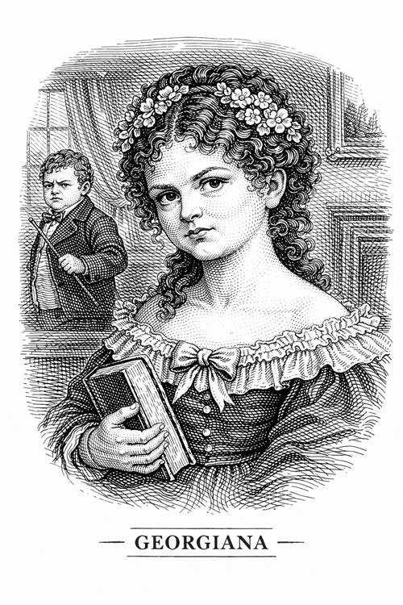

Georgiana Reed

Georgiana es la prima pequeña de Jane. Desde que nació se convirtió en la consentida de la casa debido a que es muy guapa y delicada, lo que la convierte en una persona muy egoísta y mimada.
Personalidad e impacto en la vida de Jane
Es una persona superficial, caprichosa y vive de la atención que le dan los demás. Gran parte de su felicidad se la proporcionan los bailes, los vestidos y los pretendientes. En definitiva, necesita ser el centro de atención continuamente.
Georgiana sirve para dar visibilidad a las injusticias a las que se enfrenta Jane. Mientras que la pequeña podía portarse fatal por el simple hecho de ser guapa, a Jane la castigaban prácticamente por respirar. Por ello, ve en ella que la belleza física no garantiza ser buena persona ni una valía real.
Por otro lado, Georgiana es la única de los tres hermanos que muestra algo de cariño hacia Jane, aunque sea de forma superficial.
Cuando Jane vuelve a Gateshead para ver a la señora Reed, su prima no para de llorar y quejarse, pero no por su madre, sino porque su hermana mayor había arruinado sus planes de escaparse con un chico.
Importancia del personaje
Las hermanas Reed son los dos lados de una moneda: una es lógica pura sin corazón (Eliza), la otra es sentimiento puro sin cerebro (Georgiana). Jane es el equilibro perfecto entre las dos.
Impacta que ni ella ni su hermana sean capaces de sentir empatía por la muerte de su madre. Georgiana se pasa el día quejándose de que se aburre esperando a que suceda el funeral. Por otro lado, su hermana se pasa el día rezando para que su madre muera rápido y así poder heredar.
Georgiana acaba cumpliendo su sueño: se casa con un hombre rico de la alta sociedad. Este personaje muestra perfectamente la necesidad de su clase social de mantener el estatus ante todo.